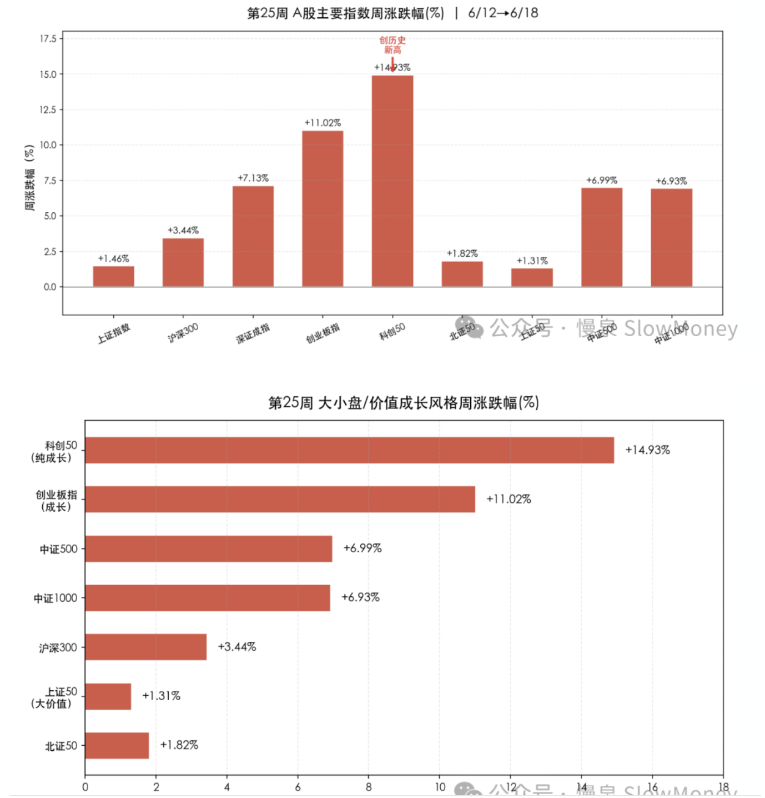

投资备忘20260621-走势全对、结构全错
2026-06-15 — 2026-06-21 · W25 · 周度备忘（补档）
本周市场走势让人心塞：组合在指数 3900～4100 的走势判断全对，但是在结构上的判断全错——市场以一种冲劲十足的方式，把一部分资产当作"提款机"、把 AI 资产当作"老虎机"进行反弹，完成了对前期下跌中枢和颈线的修复。但是组合却在苦苦挣扎：红利和现金流资产不仅没有反弹，反而持续下跌。想起以前高考做卷子：过程全错、答案全对的时候能得点分，如果选择题或者填空题还能得满分——但现在走势全对、结构全错，不仅没分，而且可能被打得皮青脸肿。
市场情况
本周 A 股走出极致分化行情——科创 50 暴涨 14.93% 创历史新高、创业板 +11.02% 双创新高，但上证仅微涨 1.46%，全 A 中位数约 +0.9%。FOMC 鹰派点阵图（9 人支持加息）冲击下，银行（-6.13%）、煤炭（-10.97%）、非银金融（-2.69%）全周领跌，资金大规模从高股息/大金融迁移至 AI 硬科技方向，呈现"双创牛市、主板震荡、赚指数不赚个股"的极端撕裂格局。
| 指数 / 风格 | 本周涨跌幅 |
|---|---|
| 科创 50（纯成长，创历史新高） | +14.93% |
| 创业板指（成长） | +11.02% |
| 中证 500 | +6.99% |
| 中证 1000 | +6.93% |
| 沪深 300 | +3.44% |
| 上证指数 | +1.46% |
| 上证 50（大价值） | +1.31% |

结构上：极致的成长碾压价值格局。银行（-6.13%）、煤炭（-10.97%）、公用事业（-4.64%）等传统价值板块全线暴跌；电子（+13.61%）、通信等成长板块暴涨。传导链条很清晰：FOMC 鹰派点阵图 → 利率敏感型价值资产遭抛售 → 资金大规模迁移至 AI 产业基本面驱动的科技成长——高股息资产沦为科技主线"提款机"。
截图 · 待补——原截屏文件名：截屏2026-06-21 09.58.46.png
截图 · 待补——原截屏文件名：截屏2026-06-21 09.59.03.png
组合备忘
组合本周大幅弱于市场（市场指 Wind 全 A 指数），一方面反映了市场的分化，也反映了组合的选择对当前市场的偏离——偏红利和现金流资产：现金流资产遭到抛售，港股资产受到外围影响。本周整体进行了减仓，减仓的方向主要是 AI 硬件、机器人智驾标的；红利资产和电力通胀资产本周下跌较多，仓位变动不大。整体在市场分化较大的背景下，指数上涨到 4100 附近降低了反弹资产的仓位。
| 类别 | 仓位 |
|---|---|
| Beta 策略（明显下降——底部反弹资产性价比下降） | 63% |
| Macro 策略权益仓位（含转债 27%，防止继续结构性下跌） | 61% |
组合表现大幅弱于市场 · 周度涨幅不再公开播报
市场走势展望：上周认为市场尝试 4100，本周冲到 4100 点，但是结构差异非常大，组合表现低于大部分指数涨幅。预计在 4100 点附近的关键位置（颈线位置、高点和低点的中间位置），需要更长的时间来消化反弹——4100 点的震荡不会维持太久，向上向下两种预案：
- 如果向上——估计仍然会以现在的市场结构为主：AI 为核心的 TMT 资产带动指数上行，没有新增资金的情况下，红利和现金流资产会继续承压、被当作提款机；
- 如果向下——就很像 2021 年 3 月份后的正常调整，形成新的区间震荡格局，结构上也会有变化。
当前组合要有耐心，不能慌乱追逐高位 AI 资产，不做线性外推资产的接盘者。要少犯错，找到持续现金流的资产的黄金坑。
上期钩子的答案：① 4100 上攻力度——兑现，指数冲到 4100，但轮动的方向和预想相反：不是丝滑轮动到价值，而是资金大规模回流 AI（科创 50 单周 +14.93%），红利反而被抽血；② 轮动的催化——FOMC 鹰派点阵图（9 人支持加息）成了催化剂，但催化的是利率敏感型价值资产的抛售；③ TMT 瓦解 vs 银行缩圈——反转：TMT 暴涨、电子 +13.61%，银行 -6.13%，上周"抱团瓦解"的是红利而非 AI。轮动条件的复盘：有钱（✓）、有分化（✓），但催化来的时候方向不由人。新钩子：① 4100 颈线位置的消化时间与向上/向下的选择；② 红利/现金流"黄金坑"的验证——不追高、不线性外推的耐心能换来多少超额；③ FOMC 加息定价（美债→美股）对全球风险资产的持续冲击。对账窗口：2026 年 7 月上旬。